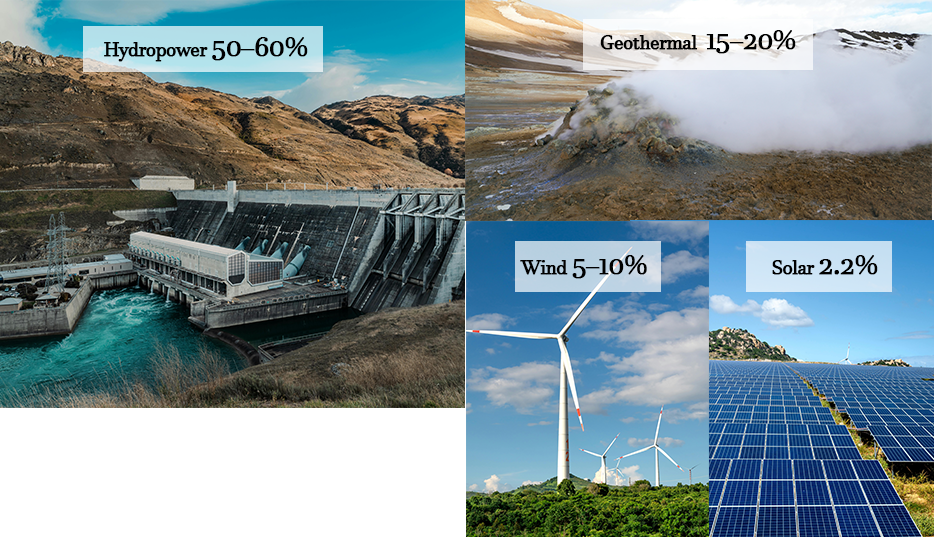

On average, a petrol car produces about 16-18 kg of CO₂ per 100 km. Larger vehicles like SUVs and utes can produce even more.

On average, a petrol car produces about 16-18 kg of CO₂ per 100 km. Larger vehicles like SUVs and utes can produce even more.

In New Zealand, an electric vehicle produces about 1.5–2.6 kg of CO₂ per 100 km, depending on how the electricity is generated.
Most of New Zealand's electricity comes from renewable energy sources (around 80-85%), meaning electric vehicles are powered by cleaner energy than in many other countries, even though some people think EVs still cause high pollution because they use electricity.
